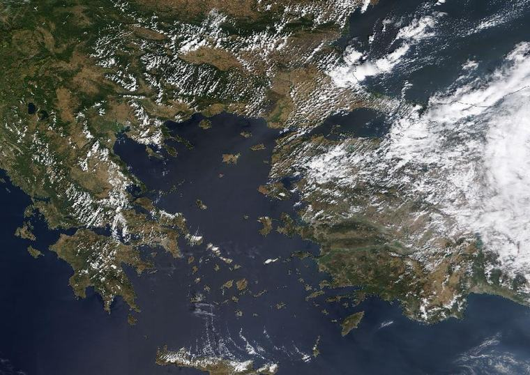
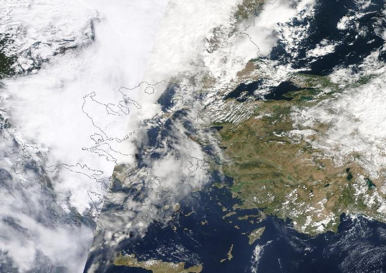
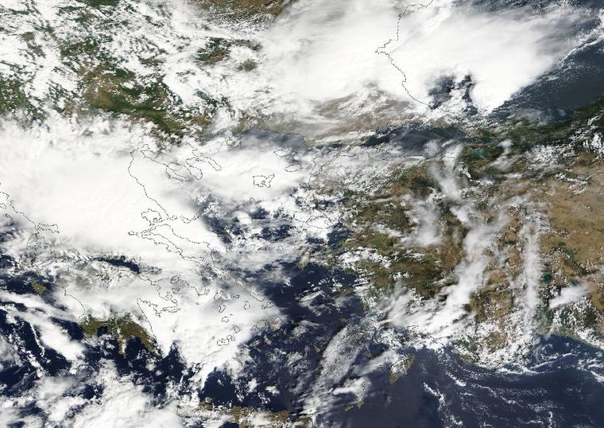
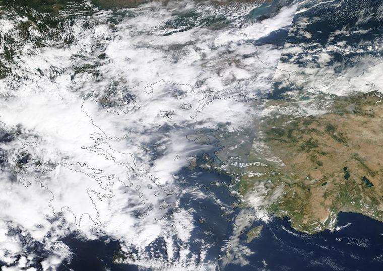
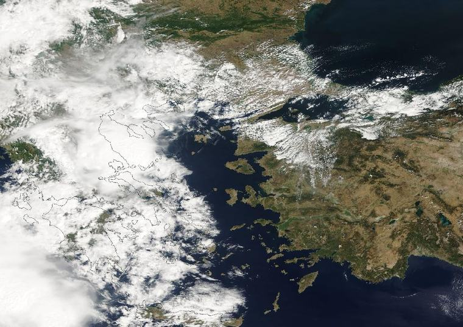
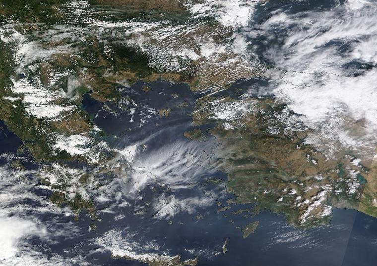
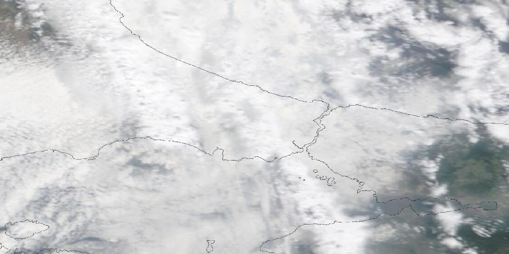

205 hPa kuruluş özeti
215 hPa 00 · kısaca
230 hPa 00 · içindekiler
260 hPa 01 · neden şimdi
300 hPa 02 · hangisi sana yakın?
Seçimin yalnız bu cihazda kalır; sayfanın tonu sana göre ayarlanır.
400 hPa 03 · başka bölümdensen
500 hPa 04 · ne yapıyoruz
Ne yapıyoruz
600 hPa 05 · yol haritası
600 hPa 05 · 6 adımda yol haritası






3 → 8 Eylül 2023 · MODIS TerraVaka: 5-6 Eylül 2023 İstanbul seli
6. adımın sorusu: yapay zekâ hava modelleri bu seli bir gün önceden görebilir miydi?
Ekip bunu bir ödev değil, yıl yıl düşen bir hata eğrisi olarak çalışacak. Ders videoları da aynı vakadan beslenir: "o gün atmosfer neden böyle davrandı?"
650 hPa 06 · atmosfer anlatıları
650 hPa 06 · atmosfer anlatıları nasıl işler
700 hPa 07 · meraklısına
720 hPa 07a · canlı tahmin karnesi
İstanbul'un tahmin karnesi, son 30 gün
GFS'nin bir gün önceki günlük en yüksek sıcaklık tahmini ile aynı günün 0. gün koşusu arasındaki fark. Dürüst not: gerçek gözlem değil, modelin kendi en taze koşusu. Gözlemle (MGM) karşılaştırma tam olarak 1. basamağın işi. Çubukların üstüne gel.
760 hPa 07b · neden mümkün: yapılmış işler
Hepsi yapılmış iş; klipler gerçek arayüzler.

800 hPa 07c · dürüst gerçekçilik
850 hPa 07d · takvim, sayılar, kaynaklar
880 hPa 08 · anket 1 · kaydır
Kartların arkasındaki gökyüzü fotoğrafları Ömer'in 2026 bahar bulut günlüğünden; her kartta bulutun adı yazıyor. Ok tuşları da çalışır.
900 hPa 09 · 5 soru

925 hPa 10 · anket 2 · seç
Ne olsa gelirsin, neden gelmezsin?
950 hPa 11 · anket 3 · canlı
Oy ver, yüzdeyi gör.
Bir cihaz, bir oy. Sonuçlar herkese açık.
975 hPa 12 · söyle, uçsun